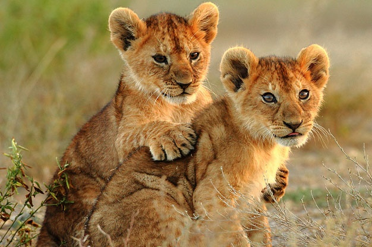

Lion cubs life cycle
Birth weight: 1, 5 kilograms
Eyes open: at 3 to 11 days
Weaning: Starts at 10 weeks; completed at 10 months
Hunting skills achieved: At 2 years old
Fully grown: 3-4 years
6 interesting facts about lion cubs
- Mothers can give birth to up to six cubs at a time, but litters of two or three are more common.
- Just before giving birth, the mother will leave the pride and find a secluded, isolated, safe place.
- At 10 days old, lion cubs will open their eyes and very soon after that – between 10 to 15 days old – will start walking.
- The mother will keep the cubs in isolation, away from the pride, for the first four to eight weeks of their lives.
- At around three months old the cubs will start to eat meat.
- Male lions generally play no paternal role when it comes to providing food for the cubs.